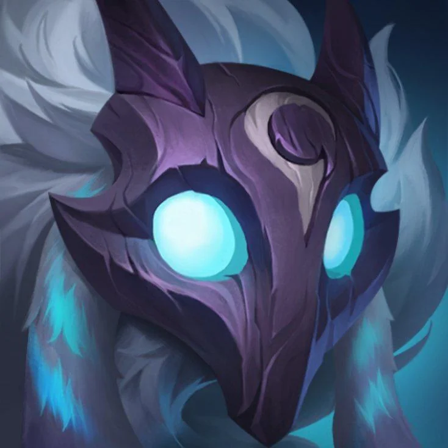
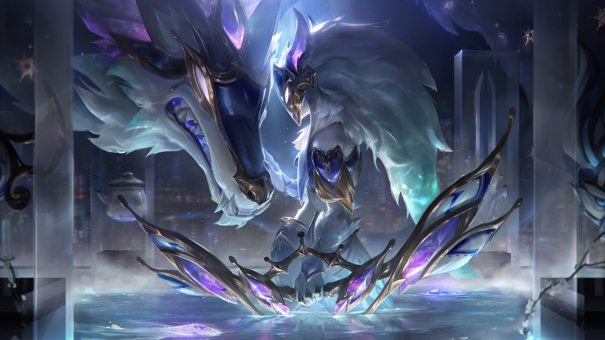
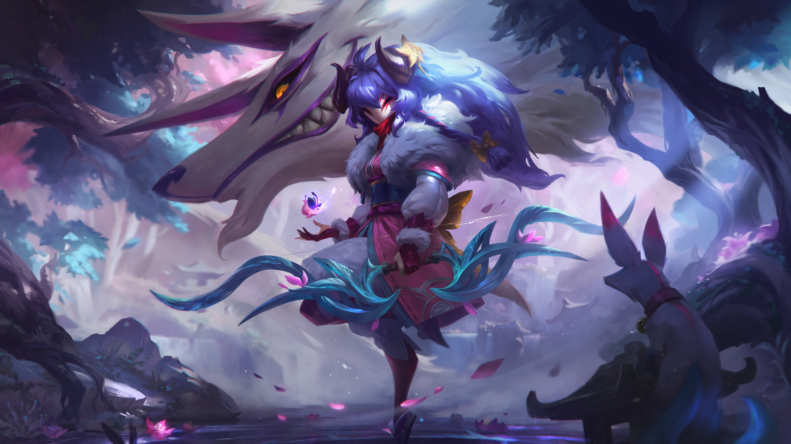

Kindred, Los Cazadores Eternos
Kindred es un campeón en League of Legends, un tirador con un estilo de juego único y habilidades.
Habilidades
- P - Marca de los Kindred:
- Q - Lamb's Respite: Kindred's lamb companion heals allied champions and damages enemy champions.
- W - Wolf's Frenzy: Kindred's wolf companion attacks enemy champions and structures.
- E - Mounting Dread: Kindred gains movement speed and attack speed for a short duration.
- R - Death's Dance: Kindred deals damage to all enemy champions in a large area.
Lore
Kindred is a pair of twin spirits, Lamb and Wolf, who hunt and kill champions to maintain the balance of life and death in Valoran.
"The hunt is eternal, and we are its instruments."
Skins Gallery
 